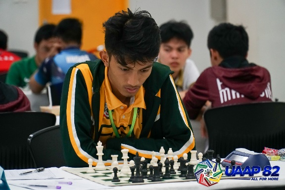

Player Information
Full Name: John Merill E. Jacutina
Started Playing Chess: 6 years old
Hometown: Caloocan City
Skills/Talents other than chess: playing guitar, Axie and other games that require analysis and calculation.
Affiliation to any other group/team: Far Eastern University Chess Team
Chess Title: Fide Master
John Merill can be considered as a child prodigy when it comes to chess. He was first introduced to the sport at a very young age of 4 from his mother, and by the time he reached 12, he was totally engaged in the sport.
Studying chess books and sparring with chess players above his level, he started to master the sport, learn techniques and was thoroughly and intently trained by his father, hoping that his sharp chess skills will bring him places and study grants in schools. And so, it did, at the age of 12, John Merill was granted a scholarship by FEU after landing a Top 3 spot in the National Chess Championship for children below 14 years old. The hard work of John Merill and his father paid off, not only did he receive international recognition and represent the country abroad, he was also given a well deserved study grant by one of the best universities in the Philippines.
However, John Merill’s chess journey did not stop there, he continued to train hard religiously as an athlete of FEU and trained under the guidance of renowned Filipino chess masters National Master Alexander Milagrosa and Grand Master Jayson Gonzales, which really helped not only in honing his skills and mastering his craft but also in improving his confidence.
“I was training everyday after school til midnight at our training hall in FEU alongside with my coaches National Master Alexander Milagrosa and Grand Master Jayson Gonzales, which boosted my confidence.“
Being trained by the finest chess players in the country boosted his confidence as a chess player, therefore improving as an athlete. By the time he was 14, he was able to reach the top of the pedestal by winning tied for 1st place in the under 20- National Chess Juniors Tournament, consequently earning his National Master title.
FIDE World Schools Championships 2015 - OU15
This success was followed by more wins in national age group tournaments and the honor to compete and represent the Philippines in other countries. The following year, in 2015, John Merill won the championship in the under 15- World School Chess Tournament and was therefore awarded the Fide Master title. Once he arrived back in the country after the said competition, his coach, GM Jayson Gonzalez, personally recommended Jacutina to become part of the national team.
“When we got back to the Philippines our coach GM Jayson Gonzales personally recommended me to the president of the National Chess Federation of the Philippines (NCFP) to become part of the national team.”
For John Merill, the best part of becoming a national athlete was making him and his father’s dream come true. “Becoming a national team was my father's dream. I was an extension of that dream, I achieved it for him and for me that is my best part of becoming a national Team.”
The current COVID-19 pandemic for John Merill, is what’s hindering most of the chess players from training. For him “the passion and confidence of most of the players declined due to the lack of tournaments and face to face training.” In terms of government funding, John Merill stated that “more exposure for group training sessions alongside elite Filipino chess players will help and pull other players to the top.” He added, “funds for chess books, chess training venues and local/international tournaments would help to improve the chess culture in the country.”